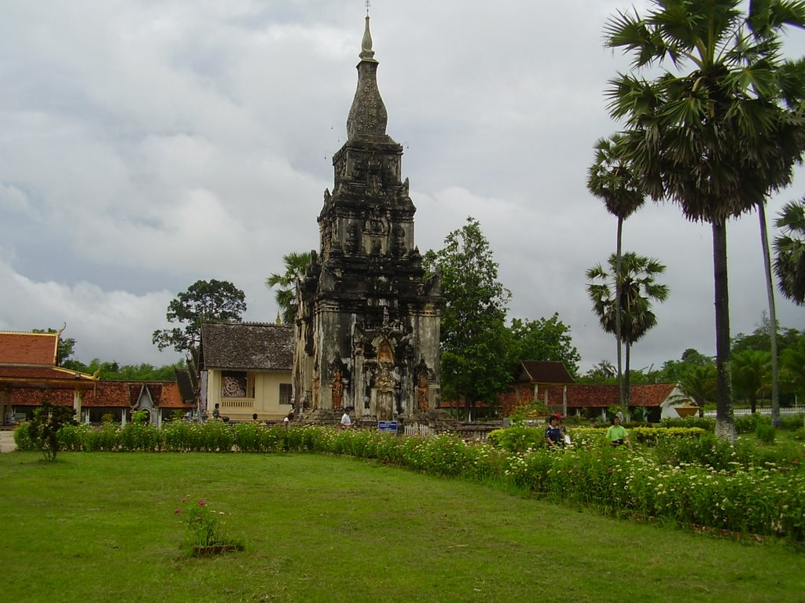

ພະທາດອີງຮັງ
ພະທາດອີງຮັງ ເມືອງໄກສອນພົມວິຫານ
ທາດອີງຮັງ ພະທາດອີງຮັງ ເປັນສິລະປະ ແລະ ສະຖາປັດຕະຍະກຳທີ່ສວຍງາມທັງເປັນປູຊະນິຍິສະຖານທີ່ສຳຄັນແຫ່ງຫນຶ່ງຢູ່ ສປປ ລາວ ຕັ້ງ ຢູ່ແຂວງສະຫວັນນະເຂດ ແລະ ປະມານ 15ກິໂລແມັດ ລະຫວ່າງເສັ້ນທາງສະຫວັນເຊໂນ. ພະທາດກວ້າງດ້ານລະ 9 ແມັດມີລັກສະ ນະເປັນສີ່ລ່ຽມຫຍໍ້ມູມເຫມືອນຫໍຜາສາດເປັນພະທາດແບບປະສົມວິຫານຄືເປັນສະຖານທີ່ປະດິດສະຖານສິ່ງສັກສິດ ເພາະມີປະຕູເຂົ້າອອກ ໄດ້. ອົງພະທາດຈັດເປັນ 3 ຖານຫລຸດຫລັ່ນກັນເປັນລຳດັບຖານລຸ່ມ, ຖານກາງ ເປັນສິລະປະດັ້ງເດີມ, ຖານເທິງ ແລະຍອດພະທາດເປັນ ສິລະປະສະໄຫມລ້ານຊ້າງ. ແຂວງສະຫວັນນະເຂດ ເປັນເມືອງອັນດັບ 2 ຂອງປະເທດທາງດ້ານເສດຖະກິດມີເນື້ອທີ່ 22.080 ຕາລາງກິໂລແມັດ ແລະ ພົນລະ ເມືອງປະມານ 656.000 ຄົນ ມີຊາຍແດນຕິດກັບແຂວງຄຳມ່ວນ, ແຂວງສາລະວັນ, ປະເທດຫວຽດນາມ ແລະ ປະເທດໄທ. ເປັນເຂດຫນຶ່ງທີ່ອຸດົມສົມບູນມັ່ງຄັ່ງໄປດ້ວຍວັດທະນະທຳຈຸດພິເສດຂອງແຂວງນີ້ ທາງດ້ານວັດທະນະທຳມີບູຮານສະຖານທີ່ເກົ່າແກ່ ປະມານ 7 ສະຕະວັດ ແລະ ໃຫມ່ປະມານ 2 ສະຕະວັດ. ບູຮານສະຖານທີ່ບັນຈຸສິລະປະລວດລາຍແບບຂອມ ເຊິ່ງເຊື່ອກັນວ່າສ້າງໃນ ສະໄຫມສະຕະວັດທີ 11 ໄດ້ແກ່ຫໍເທວະໄລ, ຜາສາດເຮືອນຫີນເມືອງສອງຄອນ ແລະ ທາດພູບ້ານນາດູ່ ເມືອງ ຈຳພອນ ແລະ ທີ່ເດັ່ນ ໄປກວ່ານັ້ນ ກໍ່ຄືທາດອີງຮັງ ວັດຫນອງລຳຈັນບ້ານຊະຄືນໃຕ້, ວັດທ່າໂສນ, ວັດໄຊະພູມ ແລະ ວັດຈຳພອນ, ວັດດັງກວາງສ້າງຂຶ້ນໃນ ສະຕະວັດທີ 18-19ແລະ ຕົ້ນສະຕະວັດທີ 20ນີ້ເອງ.

ຂໍ້ຫ້າມບ່ອນນີ້ຄື ຫ້າມແມ່ຍິງເຂົ້າໄປຊັ້ນໃນຂອງຕົວອົງພະທາດ ໄດ້ແຕ່ຂາບໄຫວ້ດ້ານນອກເທົ່ານັ້ນ ແລະ ຈະເຂົ້າບໍລິເວນວັດຈະ ຕ້ອງນຸ່ງສິ້ນເທົ່ານັ້ນ. ດີແລ້ວ ສາວໆທີ່ນຸ່ງສົ້ງແອວຕ່ຳແອວສູງຫມົດສິດເຂົ້າໄປຂາບ ນອກຈາກຈະຊື້ປີ້ຜ່ານແລ້ວໄປເອົາສິ້ນມານຸ່ງທັບສົ້ງເຂົ້າໄປ ເຊິ່ງເຂົາມີ ບໍລິການຢູ່ຂ້າງໆ. ຄ່າຜ່ານປະມານ 5.000 ກີບສາວຍຸກໂລກາພິວັດບາງຄົນ(ສຳລັບຕ່າງຊາດ)ບໍ່ເຄີຍນຸ່ງສິ້ນມາກ່ອນອອກອາການເຂີນໆ ແລະ ຄືມັນຈະຫລຸດຢູ່ເລື້ອຍຕ້ອງຄອຍຈັບໄວ້. ຜູ້ທີ່ຈະໄປຂາບໄຫວ້ພະທາດຫາກຕ້ອງການຊື້ເຄື່ອງບູຊາກໍ່ມີຊາວບ້ານມາວາງຂາຍຢູ່ແຄມທາງກ່ອນເຖິງພະທາດ ສ່ວນຢູ່ບໍລິເວນວັດ ຈະມີແຕ່ທູບທຽນເທົ່ານັ້ນ. ໃກ້ໆອົງພະທາດຈະມີສາລາຫລັງນ້ອຍໆ ມີພະ ແລະ ແມ່ຊີຫມູນວຽນກັນມາປະຈຳ ເພື່ອໃຫ້ຜູ້ມີສັດທາເຂົ້າໄປຂໍພອນ ຫລື ຜູ້ແຂນ ຈະບໍລິຈາກ ຫລື ບໍ່ກໍ່ຕາມ. ດ້ານຫນ້າຂອງອົງພະທາດຈະມີຜູ້ເຖົ້າມາຄອຍທຳພິທີພິເສດໃຫ້ທ່ານທີ່ຕ້ອງການ, ຊື່ກັບບານປະຕູເຂົ້າອົງພະທາດ ສັງເກດເຫັນວ່າ ເຄື່ອງບູຊານັ້ນ ຈະຖືກນຳໄປຮຽງກັນຢູ່ຖານຂອງອົງພະທາດ ແລະ ຈະມີຫມາກພ້າວອ່ອນທີ່ເປີດເນື້ອອອກວາງຮຽງກັນຜູ້ຂຽນບໍ່ມີໂອກາດ ຖາມລາຍລະອຽດເດົາເອົາວ່າ ຫນ້າຈະເປັນເຄື່ອງບູຊາອີກປະການຫນຶ່ງຕາມຄວາມເຊື່ອຂອງເຂດນີ້. ເພິ່ນຈະຈັດງານບຸຸນສະເຫຼີມສະຫຼອງພະທາດໃນມີ້ຂນ 15 ຄໍ່າ ເດືອນຈຽງ ( ເດືອນ 1 ລາວ ) ຂອງທຸກໆປີ ( ແຕ່ກ່ອນຈັດງານເດືອນ 12 ເພັງ ພ້ອມທາດຫຼວງ ແຕ່ເນື່ອງຈາກວ່າ ເຈົ້າໄຊເຊດຖາທິລາດ ພະອົງມີພະຣາຊະກິດທີ່ພະທາດຫຼວງ ເພິ່ນຈຶ່ງເລື່ອນມາຈັດງານໃນເດືອນຈຽງເພັງ ) ພ້ອມນັ້ນ ຍັງມີງານຕະຫຼາດນັດ ແລະ ການຫຼິ້ນກິລາ ດັ້ງເດີມນັ້ນແມ່ນມີແຕ່ກິລາໝາກຂ່າງ ແຕ່ປັດຈຸບັນບໍ່ເຫັນມີການສົ່ງເສີມພໍປານໃດ.
